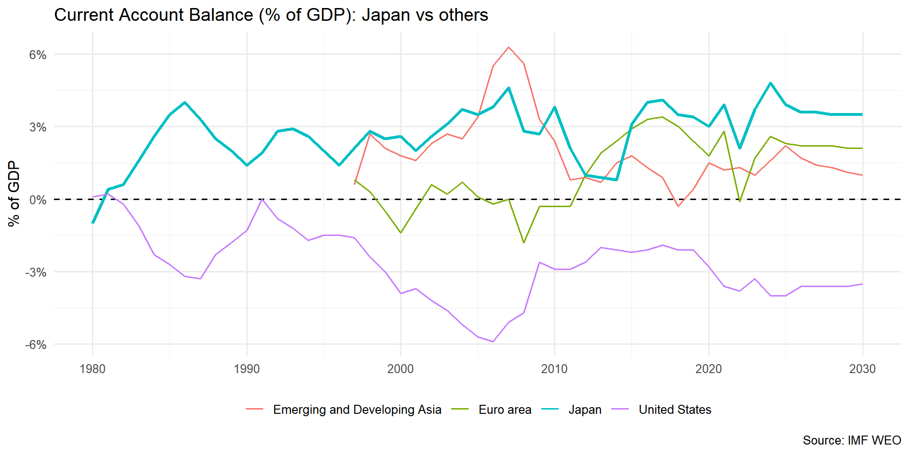
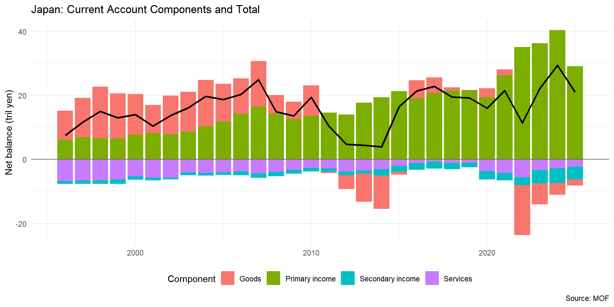
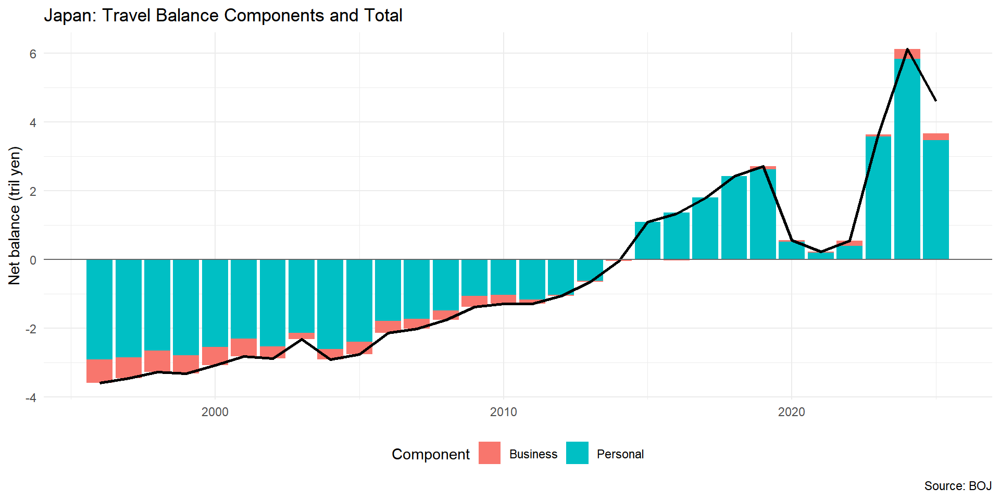
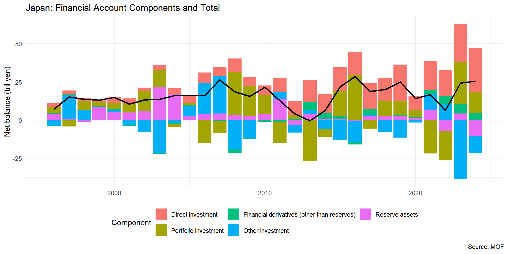
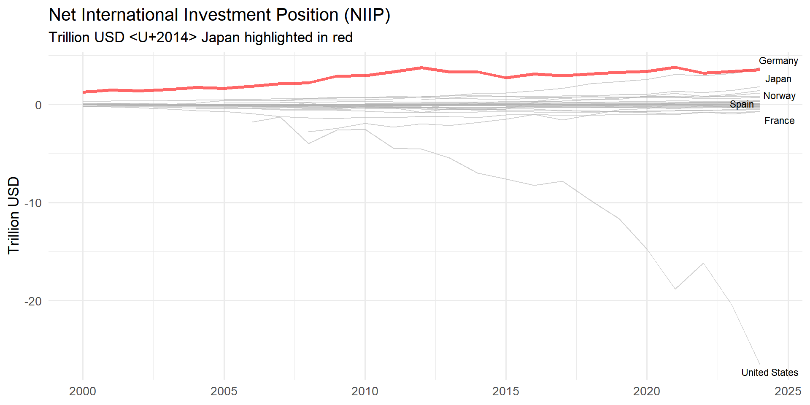

2025-12-01
| Balance of payments | Credits | Debits | Balance |
|---|---|---|---|
| Current account | |||
| Goods and services | 540 | 499 | 41 |
| Goods | 462 | 392 | 70 |
| Services | 78 | 107 | -29 |
| Primary income | 50 | 40 | 10 |
| Compensation of employees | 6 | 2 | |
| Interest | 13 | 21 | |
| Distributed income of corporations | 17 | 17 | |
| Reinvested earnings | 14 | 0 | |
| Rent | 0 | 0 | |
| Secondary income | 17 | 55 | -38 |
| Current taxes on income, wealth, etc. | 1 | 0 | |
| Net nonlife insurance premiums | 2 | 11 | |
| Nonlife insurance claims | 12 | 3 | |
| Current international cooperation | 1 | 31 | |
| Miscellaneous current transfers | 1 | 10 | |
| Adjustment for change in pension entitlements | |||
| Current account balance | 13 | ||
| Capital account | |||
| Acquisitions/disposals of nonproduced nonfinancial assets | 0 | 0 | |
| Capital transfers | 1 | 4 | |
| Capital account balance | -3 | ||
| Net lending (+)/net borrowing (–) (from current and capital accounts) | 10 | ||
| Financial account (by functional category) | |||
| Direct investment | 8 | 11 | |
| Portfolio investment | 18 | 14 | |
| Financial derivatives (other than reserves) and ESOs | 3 | 0 | |
| Other investment | 20 | 22 | |
| Reserve assets | 8 | ||
| Total changes in assets/liabilities | 57 | 47 | |
| Net lending (+)/net borrowing (–) (from financial account) | 10 | ||
| Net errors and omissions | 0 |
Source: Table 2.1 IMF BPM 6th ed.
Components Required for Compiling Remittance Items and Their Source
| Item | Source and description |
|---|---|
| 1. Compensation of employees | Primary income account, standard component |
| 2. Personal transfers | Secondary income account, standard component |
| 3. Travel and transport related to employment of border, seasonal, and other short-term workers | Goods and services account, supplementary item |
| 4. Taxes and social contributions related to employment of border, seasonal, and other short-term workers | Secondary income account, supplementary item |
| 5. Compensation of employees less expenses related to employment of border, seasonal, and other short-term workers | Primary income account (for compensation of employees), standard component; Goods and services account (for travel and transport expenses) and secondary income account (for taxes and social contributions), supplementary items |
| 6. Capital transfers between households | Capital account, supplementary item |
| 7. Social benefits | Secondary income account, supplementary item |
| 8. Current transfers to NPISHs | Secondary income account, supplementary item |
| 9. Capital transfers to NPISHs | Capital account, supplementary item |
Source: Table A5.1 IMF BPM 6th ed.
A Japanese firm exports machinery worth 1 million to the United States. Payment is received by bank transfer.
| BoP Account | Credit (+ inflow) | Debit (− outflow) |
|---|---|---|
| Current Account (Exports of Goods) | +1,000,000 | |
| Financial Account (Bank deposits oversea account) | −1,000,000 |
A Japanese resident buys clothes worth 100,000 from Korea using trade credits
| BoP Account | Credit (+ inflow) | Debit (− outflow) |
|---|---|---|
| Current Account (Imports of Goods) | -100,000 | |
| Financial Account (Trade credit liabilities) | 100,000 |
Foreigners visit Japanese and pay for their holiday by using money deposited in their country’s bank accounts.
| BoP Account | Credit (+ inflow) | Debit (− outflow) |
|---|---|---|
| Current Account (Export of Services) | 100,000 | |
| Financial Account (Bank deposits oversea account) | -100,000 |
Current Account + Capital Account: net receive from the rest of the world in return for the exports of goods and other resources
Financial Account: net increase foreign assets
Current Account + Capital Account = Financial Account - Errors and Omissions
BOP is a description of the international budget constraint for the country
| Opening position | Transactions (fin. acc.) | Other changes in volume | Revaluation | Closing position | |
|---|---|---|---|---|---|
| Assets (by functional category) | |||||
| Direct investment | 78 | 8 | 0 | 1 | 87 |
| Portfolio investment | 190 | 18 | 0 | 2 | 210 |
| Financial derivatives (other than reserves) and ESOs | 7 | 3 | 0 | 0 | 10 |
| Other investment | 166 | 20 | 0 | 0 | 186 |
| Reserve assets | 833 | 8 | 0 | 12 | 853 |
| Total assets | 1,274 | 57 | 0 | 15 | 1,346 |
| Liabilities (by functional category) | |||||
| Direct investment | 210 | 11 | 0 | 2 | 223 |
| Portfolio investment | 300 | 14 | 0 | 5 | 319 |
| Financial derivatives (other than reserves) and ESOs | 0 | 0 | 0 | 0 | 0 |
| Other investment | 295 | 22 | 0 | 0 | 317 |
| Total liabilities | 805 | 47 | 0 | 7 | 859 |
| Net IIP | 469 | 10 | 0 | 8 | 487 |




